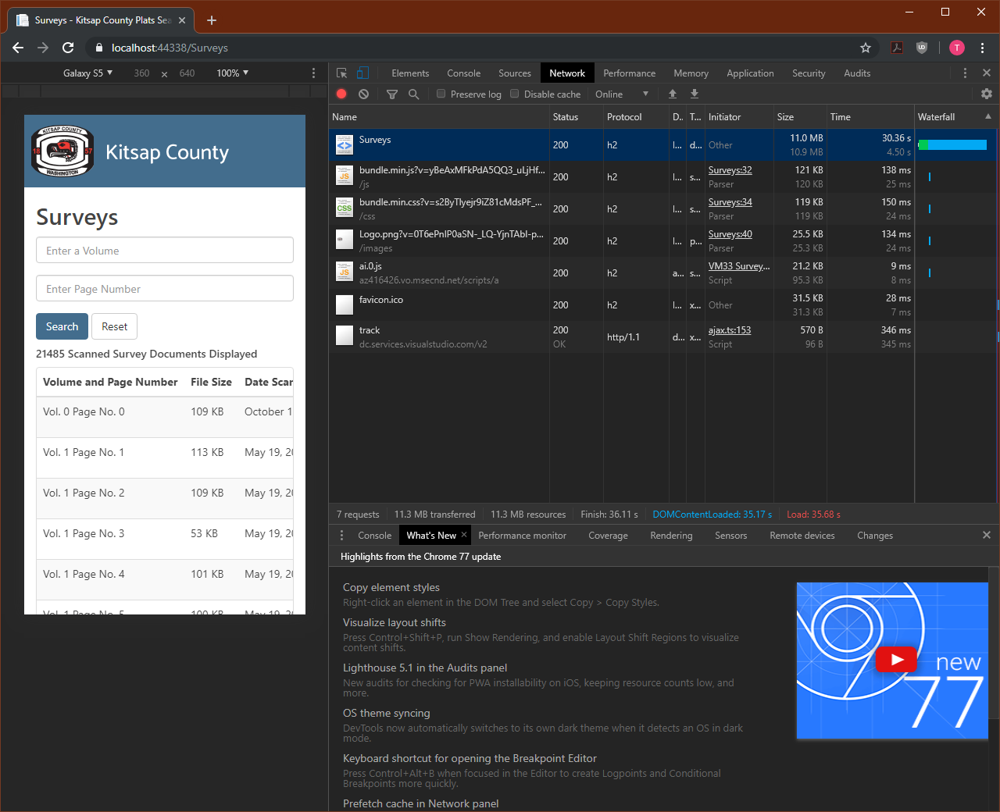
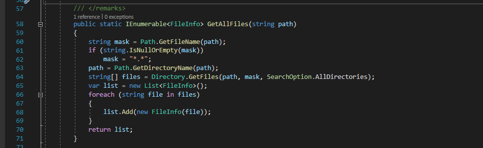
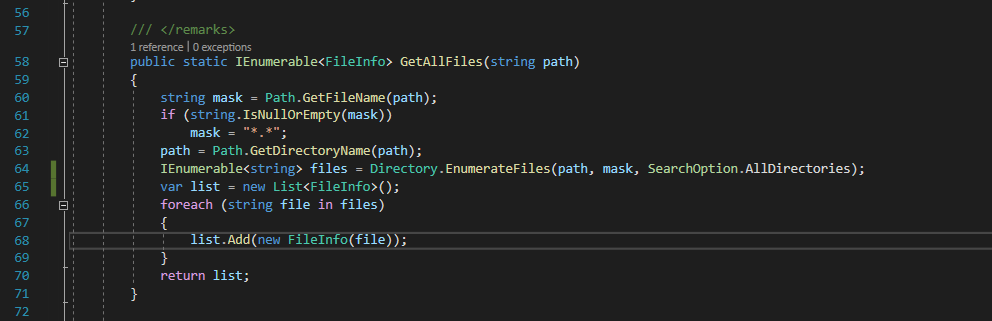
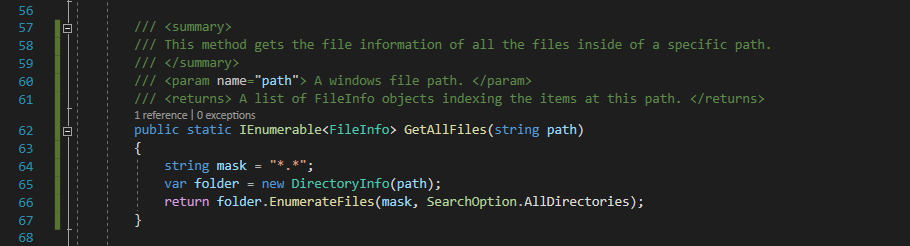
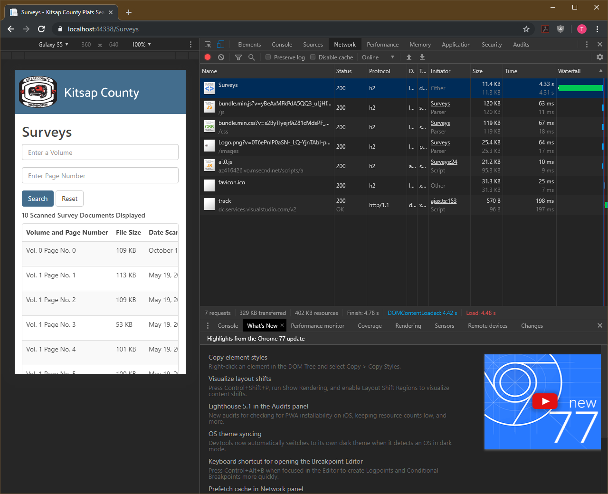
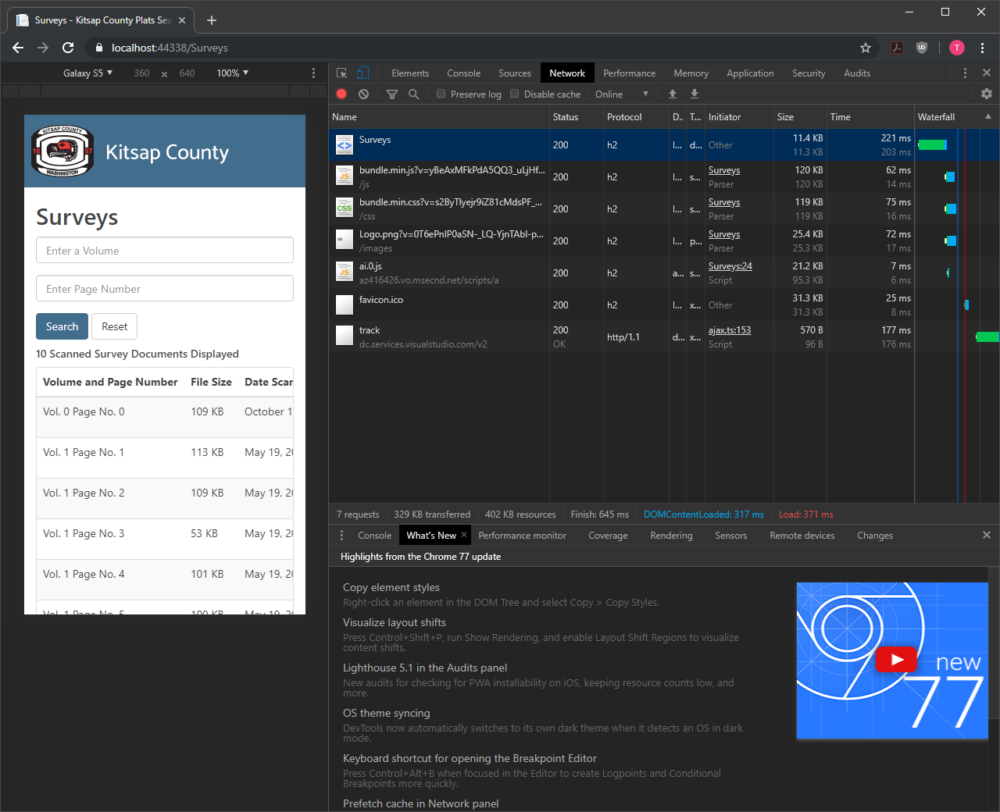

Quickly Indexing File Directories in ASP.NET Core 3.0
I recently upgraded an ASP.NET Core 2.2 web app to 3.0. As part of this process I took some time to review the existing code base. One of the features of this application is to index and provide links to scanned documents stored in a remote directory on the internal network.
This feature was implemented in haste just after Christmas of 2018 while most of my coworkers were on vacation. The first bit of feedback I received was that it was too slow to load. To solve this problem, I limited the scope of records returned on the initial page load to just the first page of every volume in the directory. This got the page load times down into the workable zone of less than 3 seconds.
In my excitement to upgrade this app to ASP.NET Core 3.0 I was expecting to see significant performance differences in the Application Insights telemetry that was collected for the 2.2 version of this app versus the 3.0 version of this app.
After a week or so of running the 3.0 version in production I was disappointed to find that page load and server response times were basically the same. But in this moment, I found the motivation to address the core problem; the file indexing process used by this app was slow.
As a baseline let’s remove the scope limiting to create a worst-case scenario and then load the page from a hard refresh.

Wow, a complete page load using this naïve implementation takes 36.11 seconds and transfers 11 MBs. That’s a horrific user experience.
Doing needless work
The crux of the issue is this function that gets a list of FileInfo objects to represent all the files in a folder.

This is beginning to read like a confession, but I shamelessly stole this code from a StackOverflow post and then modified it to suit my use case.
When I wrote this, I hadn’t spent much time working with the System.IO library. Since then I’ve gotten drastically more comfortable using it in other projects to create, copy, and move files around. Thanks to this additional experience I knew that something was amiss when I saw this code.
This naïve implementation starts by getting an array of strings where each string is the name of a file in the target directory. Then it creates and empty list and appends a newly created FileInfo object to the empty list for each string in the array of file names.
This is inefficient because it requires looping over the files in the directory twice, once when we get the name and a second time when we create a FileInfo object from its properties. It’s also worth pointing out that we’re using arrays and lists here so we can’t take advantage of LINQ and IEnumerable features like lazy evaluation.

Luckily there's a method like File.GetFiles() that returns an IEnumerable<string> called Directory .EnumerateFiles(). Now instead of an array of strings we’re working with a lazily evaluated collection of strings. But we’re still looping through that collection and using it to create FileInfo objects.
What if we could just skip the middleman and get a lazily evaluated collection of FileInfo objects? Using the DirectoryInfo object and its EnumerateFiles() method we can do exactly that.

As a bonus we can cut this method down from 11 lines to 3. From a code cleanliness perspective there is some very satisfying refactoring happening here.
What is the performance impact of this improved file indexing implementation? At 33 seconds we’ve cut the page load time down by a solid 2 seconds when indexing all the files in the directory. Now we need to put lazy evaluation to work by limiting the number of files being indexed.
When just 1000 files are indexed using the naïve implementation the page load time drops to 8.6 seconds. This is a big improvement, but 8 seconds is still an eternity from a user experience perspective.
Using the lazily evaluated file indexing implementation this same operation takes 945 milliseconds. This is nearly a full order of magnitude reduction in page load time.

For an apples to apples comparison, let’s look at the before and after state for this web app where just 10 files are displayed on the page.

Using the naïve implementation, it takes 4.78 seconds to load the page. While the lazily evaluated implementation finishes in just 645 milliseconds.
A good user experience starts with reasonable performance and ends with an app that helps the user get what they need as quickly as possible. Using IEnumerable, LINQ, and lazy evaluation to index files is a technique that accomplishes exactly that.